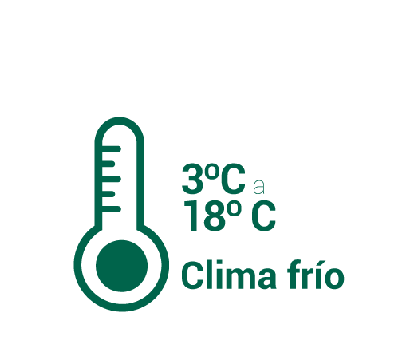
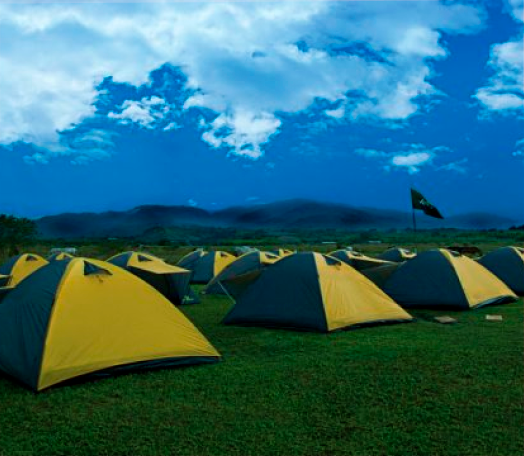
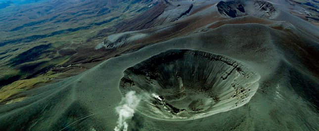
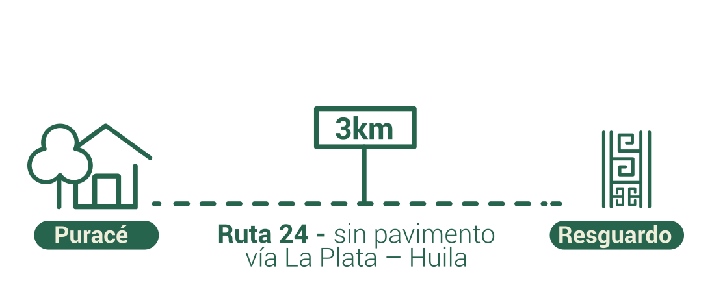
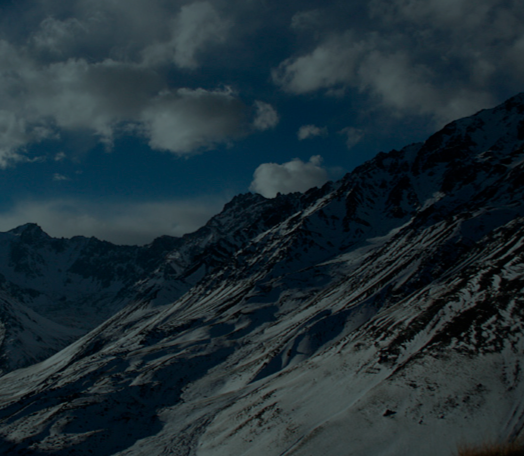

Sobre el
agua termal
agua termal


Sobre el agua termal
Clasificación
Composición

Beneficios
Apta para la inmersión corporal
¿Qué es al agua termal?
El agua termal, aquella agua que por la actividad volcánica tiene un contacto con algún canal de agua subterráneo y presenta una variedad en la temperatura superior a 4˚C a la temperatura medio ambiental (TMA) de la zona de sugerencia y puede ser apta para la inmersión corporal. El agua termal puede clasificarse por su temperatura en: Hipotermales +4ºC de TMA hasta 34ºC; Mesotermales 34ºC hasta 39ºC e Hipertermales >39ºC
Composición
1) Alto grado de mineralización: Aguas cloruradas con un predominio de Cloro; aguas sulfatadas con un predominio de Sulfatos, aguas bicarbonatadas un predominio de Bicarbonato.
2) Aguas con elementos especiales: Aguas sulfuradas tienen azufre, aguas carbogaseosas su compuesto es gas-carbónico y aguas ferruginosas contienen hierro bivalente.
Las piscinas de Puente Tierra - Pilimbalá son aguas sulfuradas.
2) Aguas con elementos especiales: Aguas sulfuradas tienen azufre, aguas carbogaseosas su compuesto es gas-carbónico y aguas ferruginosas contienen hierro bivalente.
Las piscinas de Puente Tierra - Pilimbalá son aguas sulfuradas.
Beneficios del agua termal
La literatura científica reporta que el uso del agua termal:
- Mejora la recuperación funcional.
- Tiene efectos antioxidantes y antiinflamatorios, que contribuyen al control del dolor e inflamación que se presenta en enfermedades como la osteoartritis.
- La temperatura alta del agua termal favorece la vasodilatación y la recuperación muscular.
- Contribuye al bienestar psicológico.
- Mejora la recuperación funcional.
- Tiene efectos antioxidantes y antiinflamatorios, que contribuyen al control del dolor e inflamación que se presenta en enfermedades como la osteoartritis.
- La temperatura alta del agua termal favorece la vasodilatación y la recuperación muscular.
- Contribuye al bienestar psicológico.
Propiedades de las aguas sulfuradas
Entre las propiedades específicas de las aguas termales sulfuradas se encuentran las siguientes:
- Efectos antioxidantes y antiinflamatorios.
- Actividad antibacteriana.
- Mejoría en las funciones fisiológicas respiratorias.
- Efectos antioxidantes y antiinflamatorios.
- Actividad antibacteriana.
- Mejoría en las funciones fisiológicas respiratorias.
¿Dónde encontramos
aguas termales?
aguas termales?
¿Dónde encontramos
aguas termales?
aguas termales?
Atlántico
Volcán del Totumo
Vía Barranquilla - Cartagena
Magdalena
Volcán de Ciénaga
Ciénaga
Córdoba
Volcán Arboletes
Límite Antioquía y Córdoba, Montería – Coveñas
Volcán de San Antero
Montería
Volcán de Puerto escondido
Montería
Cesar
Río Badillo
Corregimiento Río Badillo
Risaralda
Termales Santa Rosa de Cabal
9 km Santa Rosa de Cabal
Ecotermales de San Vicente
18 km Laguna del Otún
Caldas
Hotel Termales El Otoño
Manizales, Vereda Gallinazo
Termales Tierra Viva
Manizales, Vereda Gallinazo
Termales del Ruiz
Manizales, Vereda Gallinazo
Hotel Termal La Quinta
Villamaría Vía Nevado Santa Isabel
Cundinamarca
Estación Termal los Volcanes
Vía Chocontá – Machecta
Casablanca
Girardot
El Zipa
Vía Chía – Tabio
Santa Ana y Santa Lucía
Anapoima
Termales de Choachí
Choachí
El Manantial
Tenjo
Piscinas Azufradas
Guasca
Brotes de agua los Manantiales
Guatavita
Boyacá
Hotel y Centro de Convenciones Dann Sochagota
Paipa
Hotel Termales El Batán
Paipa
Cauca
Termal Puente Tierra - Pilimbalá
Puracé
Termales de Agua hirviendo y Agua Tibia Pozo azul
Coconuco
Huila
Termales de Rivera
Rivera
Termales de Villa Lozada
La Plata
Fuentes termales La Cabaña
Oporapa
Fuentes Termales de Sicán
Timaná
La Cañada y La Guillote
Tarqui
Nariño
Chiles
Chiles
La Cruz
La Cruz
Generalidades
Colombia, en sus diferentes departamentos tiene una gran variedad de manantiales termales, cuyas características y composición del agua es única.
El uso del agua termal con fines terapéuticos, es un tratamiento complementario que puede ayudar a prevenir o mitigar algunas dolencias, y depende de las propiedades y composición del agua termal.
Las aguas termales por la riqueza en los componentes minerales, pueden ser utilizadas en diferentes prácticas como balneoterapia y crenoterapia.
El uso del agua termal con fines terapéuticos, es un tratamiento complementario que puede ayudar a prevenir o mitigar algunas dolencias, y depende de las propiedades y composición del agua termal.
Las aguas termales por la riqueza en los componentes minerales, pueden ser utilizadas en diferentes prácticas como balneoterapia y crenoterapia.
El parque Nacional
Natural Puracé
Natural Puracé
El Parque Nacional
Natural Puracé
Natural Puracé
Altitud
Temperatura

Alojamiento

Zona de camping y cabañas
Alimentación


Conocido como la Montaña de Fuego
Generalidades
Reserva de la Biosfera declarada por la UNESCO (1979), área protegida por el Sistema de Parques Nacional Naturales de Colombia (1961), reconocida como la Montaña del Fuego, zona volcánica que da origen a la cadena volcánica de los Coconucos conformada por 11 volcanes, y a los principales ríos de Colombia (Magdalena, Patía, Cauca y Caquetá).
Cómo llegar
Vía aérea:
Desde las principales ciudades de Colombia, puede abordar un avión a la ciudad de Popayán.
Vía terrestre: Desde Popayán hacia La Plata – Huila, por la ruta 24, carretera pavimentada hasta el municipio de Puracé y continúa por una carretera sin pavimento hasta el Resguardo Indígena de Puracé.
Vía terrestre: Desde Popayán hacia La Plata – Huila, por la ruta 24, carretera pavimentada hasta el municipio de Puracé y continúa por una carretera sin pavimento hasta el Resguardo Indígena de Puracé.
Atractivos turísticos
En el Parque Nacional Natural de Puracé, por su belleza ecológica son atractivos turísticos la Cascada del río Bedón, Quebrada Pericos Puracé, Cadena Volcánica Los Coconucos y el Cerro Campanillas.
El Resguardo
El Resguardo
Distancias

Temperatura


Volcán Puracé
"Hijos del fuego"
"Hijos del fuego"
Sector


Laguna Andulbío
“Ninfa de las aguas”
“Ninfa de las aguas”
Para la visita

Antes del viaje

Recuerde que mayor altitud

Vestimenta

Alojamiento

Reserve su estadía en los hostales, casas y lugares para camping autorizados
Durante el viaje

Generalidades
Creado en el año 1562, con título de cédula real. Declarado resguardo indígena de la parcialidad indígena de Puracé, mediante escritura pública 492 de 1892. Pertenece a la asociación de cabildos indígenas del pueblo kokonuko. Tiene una extensión de 11.172 hectáreas. Ubicado al oriente de Popayán, según el último censo (2015) es integrado por 5060 habitantes.
Datos culturales
Para los mayores del Resguardo Indígena de Puracé, la palabra Quilliparzá, significa “camino de los espíritus”. la cual fundamenta a la corporación indígena termalistica y comercial, encargada de administrar el ecoturismo en el resguardo.
La palabra katamakú significa “hacer silencio”, lo que permite a cada visitante estar y transitar en los sitios sagrados como por ejemplo el volcán puracé “hijos del fuego” la poca intervención en esos sitios demanda que cada visitante encuentre equilibrio interior y con la naturaleza.
En el resguardo indígena de Puracé, los espacios de vida hacen referencia a la fuente de vida en una constante relación entre el indígena y la naturaleza para dar armonía, tranquilidad y equilibrio.
Los indígenas consideran que el agua es fuente de vida como por ejemplo la Laguna Andulbío, que significa “Ninfa de las aguas”. En el territorio del Resguardo Indígena existen varios sitios de interés como los Páramos, Lagunas, Ríos, Cascadas.
La palabra katamakú significa “hacer silencio”, lo que permite a cada visitante estar y transitar en los sitios sagrados como por ejemplo el volcán puracé “hijos del fuego” la poca intervención en esos sitios demanda que cada visitante encuentre equilibrio interior y con la naturaleza.
En el resguardo indígena de Puracé, los espacios de vida hacen referencia a la fuente de vida en una constante relación entre el indígena y la naturaleza para dar armonía, tranquilidad y equilibrio.
Los indígenas consideran que el agua es fuente de vida como por ejemplo la Laguna Andulbío, que significa “Ninfa de las aguas”. En el territorio del Resguardo Indígena existen varios sitios de interés como los Páramos, Lagunas, Ríos, Cascadas.
Sitios de interés
Los sitios de interés ambiental
Son aquellos que proporcionan la protección a los nacimientos de agua en el Resguardo Indígena de Puracé.
Destacados el Sector de las tres cruces – Vereda Campamento Sector las Tres Cruces, Sector del Retiro – Vereda Campamento sector el Crucero, también el Sector la Rinconada – Vereda Campamento parte alta y en el Sector Potrerillos - Vereda San Francisco
Sitios Termales para Educación, investigación y observación
, Aquellos que posibilitan la educación para la protección de la naturaleza, la investigación y también la observación de los ecosistemas del agua termal.
Se cuenta con los Termales de San Juan – Vereda Campamento, los Termales de San Juan Junior – Vereda Campamento, Termal El Encanto – Sector San Juan Parte alta, Termal Peña Amarillo – Vereda Campamento, también el Termal San Francisco – Río San Francisco Parte alta, entre los azufrales son destacados el Mandural – Vereda Campamento Sector Crucero, Azufral El Retiro la Rinconada – Vereda Campamento Parte alta y por último el Termal Río el Vinagre- Vereda Campamento Parte alta
Sitios para el baño Termal
Son aquellos que proporcionan salud, equilibrio y armonía al cuerpo y la relación con la naturaleza del agua, entre ellos las Aguas de Guarquilló – Vereda El Tablón, Aguas de Pululó – Vereda de Pululó y el Agua termal Pedro Pizo – Puente Tierra – Vereda Campamento parte Alta
Son aquellos que proporcionan la protección a los nacimientos de agua en el Resguardo Indígena de Puracé.
Destacados el Sector de las tres cruces – Vereda Campamento Sector las Tres Cruces, Sector del Retiro – Vereda Campamento sector el Crucero, también el Sector la Rinconada – Vereda Campamento parte alta y en el Sector Potrerillos - Vereda San Francisco
Sitios Termales para Educación, investigación y observación
, Aquellos que posibilitan la educación para la protección de la naturaleza, la investigación y también la observación de los ecosistemas del agua termal.
Se cuenta con los Termales de San Juan – Vereda Campamento, los Termales de San Juan Junior – Vereda Campamento, Termal El Encanto – Sector San Juan Parte alta, Termal Peña Amarillo – Vereda Campamento, también el Termal San Francisco – Río San Francisco Parte alta, entre los azufrales son destacados el Mandural – Vereda Campamento Sector Crucero, Azufral El Retiro la Rinconada – Vereda Campamento Parte alta y por último el Termal Río el Vinagre- Vereda Campamento Parte alta
Sitios para el baño Termal
Son aquellos que proporcionan salud, equilibrio y armonía al cuerpo y la relación con la naturaleza del agua, entre ellos las Aguas de Guarquilló – Vereda El Tablón, Aguas de Pululó – Vereda de Pululó y el Agua termal Pedro Pizo – Puente Tierra – Vereda Campamento parte Alta
Aclimatación fisiológica a la altitud
Son respuestas fisiológicas que ocurren en un individuo al estar bajo presiones ambientales en un periodo de corta duración, los cambios desaparecen cuando los estímulos también lo hacen.
El sistema ambiental tiene elementos que interactúan, determinan la función y comportamiento del turista cuando visita ambientes naturales extremos, como el Parque Nacional Natural de Puracé.
La altitud como la elevación vertical de un punto sobre el nivel del mar, puede incidir sobre la función y comportamiento del turista, por ello:
A una mayor altitud – Menor Presión atmosférica.
A una mayor altitud – Menor temperatura del lugar.
A una mayor altitud – Menor humedad del aire.
A una mayor altitud – Mayor velocidad del viento.
A una mayor altitud – Mayor posibilidad de lluvia.
A una mayor altitud – Mayor radiación solar.
Con la ascensión rápida a las montañas (altitud > 2.500 metros sobre el nivel del mar), disminuye la presión parcial del aire ambiental, también el organismo en reposo sufre cambios funcionales que evidencian la disminución de las moléculas de oxígeno para el correcto funcionamiento de cada una de las células (dificultad para hablar y correr), lo cual ocasiona, un efecto llamado Hipoxia.
La susceptibilidad individual a la hipoxia en más agresiva en jóvenes, mujeres y con patologías que comprometan los sistemas cardiovascular y respiratorio.
Los turistas que habitan en ciudades a una altitud menor de 1.000 metros sobre el nivel del mar pueden padecer con prontitud los síntomas inconclusos de aclimatación fisiológica (Dolor de cabeza, nausea, vómito, fatiga o mareo).
Al presentar los síntomas, si no se siente bien, descienda a una menor altitud. Pida ayuda médica (hospital – centro de atención)
El sistema ambiental tiene elementos que interactúan, determinan la función y comportamiento del turista cuando visita ambientes naturales extremos, como el Parque Nacional Natural de Puracé.
La altitud como la elevación vertical de un punto sobre el nivel del mar, puede incidir sobre la función y comportamiento del turista, por ello:
A una mayor altitud – Menor Presión atmosférica.
A una mayor altitud – Menor temperatura del lugar.
A una mayor altitud – Menor humedad del aire.
A una mayor altitud – Mayor velocidad del viento.
A una mayor altitud – Mayor posibilidad de lluvia.
A una mayor altitud – Mayor radiación solar.
Con la ascensión rápida a las montañas (altitud > 2.500 metros sobre el nivel del mar), disminuye la presión parcial del aire ambiental, también el organismo en reposo sufre cambios funcionales que evidencian la disminución de las moléculas de oxígeno para el correcto funcionamiento de cada una de las células (dificultad para hablar y correr), lo cual ocasiona, un efecto llamado Hipoxia.
La susceptibilidad individual a la hipoxia en más agresiva en jóvenes, mujeres y con patologías que comprometan los sistemas cardiovascular y respiratorio.
Los turistas que habitan en ciudades a una altitud menor de 1.000 metros sobre el nivel del mar pueden padecer con prontitud los síntomas inconclusos de aclimatación fisiológica (Dolor de cabeza, nausea, vómito, fatiga o mareo).
Al presentar los síntomas, si no se siente bien, descienda a una menor altitud. Pida ayuda médica (hospital – centro de atención)
Recomendaciones
Auto – Cuidado para la visita al PNN Puracé.
De acuerdo con el entorno que visite, es necesario realizar mecanismos de autocuidado para prevenir las enfermedades propias de la altitud.
Para la visita:
-Planee su viaje con tiempo.
-Porte los documentos de identificación, salud y otros necesarios para su viaje.
Antes del viaje
- Duerma aproximadamente 8 horas y descanse bien
- Evite el consumo de bebidas alcohólicas.
- Realice actividad física que permita mejorar su condición física.
- Consuma alimentos ricos en hidratos de carbono (Legumbres – cereales – papa – arroz – pastas).
Durante el Viaje
- No exceda la velocidad de 40 km/h. y mantenga abajo las ventanas.
- Pare en algunos lugares para caminar y así aclimatarse.
- En altitud superior a 3.450 m.s.n.m. evite esfuerzos físicos vigorosos.
- Consuma alimentos que aporten energía y consuma bebidas hidratantes.
Vestimenta
-Protéjase de la radiación solar, la cabeza con un sombrero o gorra. También los ojos con gafas con filtro Ultravioleta.
-En la medida que asciende en altitud, coloque varias capas de ropa, que aíslen la humedad y protejan de la lluvia.
-Lleve ropa de interior que proteja de la humedad.
-Use zapatos acordes a la actividad física que va a realizar en el Parque Nacional Natural de Puracé.
Alojamiento
-Reserve su estadía en los hostales, casas y lugares para camping autorizados en el municipio de Puracé, Resguardo Indígena o en el Parque Nacional Natural de Puracé.
De acuerdo con el entorno que visite, es necesario realizar mecanismos de autocuidado para prevenir las enfermedades propias de la altitud.
Para la visita:
-Planee su viaje con tiempo.
-Porte los documentos de identificación, salud y otros necesarios para su viaje.
Antes del viaje
- Duerma aproximadamente 8 horas y descanse bien
- Evite el consumo de bebidas alcohólicas.
- Realice actividad física que permita mejorar su condición física.
- Consuma alimentos ricos en hidratos de carbono (Legumbres – cereales – papa – arroz – pastas).
Durante el Viaje
- No exceda la velocidad de 40 km/h. y mantenga abajo las ventanas.
- Pare en algunos lugares para caminar y así aclimatarse.
- En altitud superior a 3.450 m.s.n.m. evite esfuerzos físicos vigorosos.
- Consuma alimentos que aporten energía y consuma bebidas hidratantes.
Vestimenta
-Protéjase de la radiación solar, la cabeza con un sombrero o gorra. También los ojos con gafas con filtro Ultravioleta.
-En la medida que asciende en altitud, coloque varias capas de ropa, que aíslen la humedad y protejan de la lluvia.
-Lleve ropa de interior que proteja de la humedad.
-Use zapatos acordes a la actividad física que va a realizar en el Parque Nacional Natural de Puracé.
Alojamiento
-Reserve su estadía en los hostales, casas y lugares para camping autorizados en el municipio de Puracé, Resguardo Indígena o en el Parque Nacional Natural de Puracé.
El municipio de
Puracé
Puracé
El municipio de Puracé
Altitud

Coordenadas
Distancias
Temperatura
Alojamiento
Territorio Montañoso, Cordillera Central
Generalidades
En el municipio de Puracé, se destacan varios sitios de interés turísticos, en el centro la Parroquia San Miguel Arcángel, también encontrará en el perímetro de la iglesia, el Monumento homenaje a la Madre creado en 1950. En el casco urbano, otro importante lugar para conocer es el Antiguo Teatro Municipal, ubicado en la calle del cacho o de los tramposos.
En la carrera octava, entre calles segunda y tercera encuentra la Antigua Casa Municipal inicia sus actividades gubernamentales en el año 1950. La galería Central Municipal (1985).
Arquitectura
En la arquitectura de Puracé se puede observar el bareque, ladrillo, madera entre otros elementos de construcción de las casas antiguas como la Familia Castillo, Familia Orozco Guauña y la Casa Parroquial de Puracé.
Educación
La educación a los niños y jóvenes de Puracé, es orientada en Centros Educativos como el Centro Docente para Varones, Centro Docente la Merced y la Institución Educativa Manuel María Mosquera.
Eventos religiosos
Los eventos religiosos en el municipio de Puracé, por su importancia son la ofrenda a San Isidro (Junio de cada año), en la cual cada comunero realiza una ofrenda de un producto cultivado en la parcela, también se celebra el día de la Virgen del Carmen (patrona de los transportadores gruta Km 11 vía Puracé - Popayan), otro evento importante para los habitantes del municipio es la Semana Santa en la cual se asiste a las actividades religiosas en el Municipio y en el Cabildo.
Ayúdenos a comprender
más sobre el agua termal
más sobre el agua termal
Ayúdenos a comprender
más sobre el agua termal
más sobre el agua termal